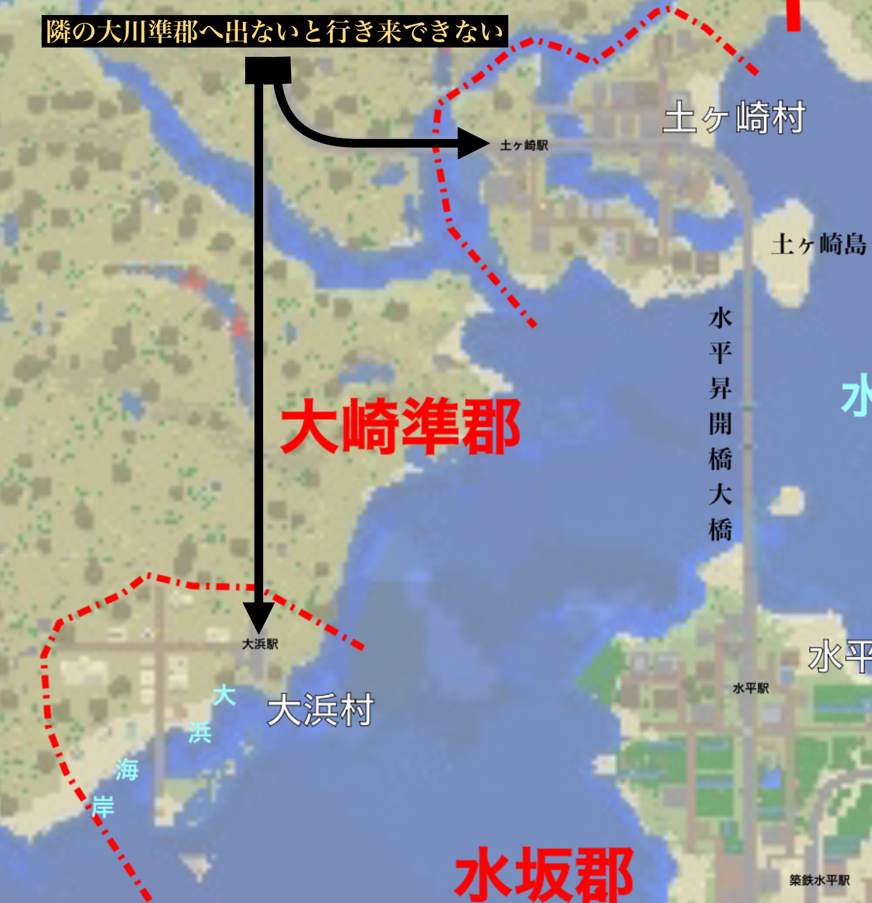

大崎準郡(おおさきじゅんぐん)は、砂砦県中部に位置する準郡である。
↑土ヶ崎集落と水平昇開橋大橋。
大崎準郡(おおさきじゅんぐん)
人口 91人(2023年1月現在)
ようす
大崎準郡内の二つの村は互いに接していないだけでなく、互いを行き来するのに郡外の大川町西大川駅を経由する必要がある。
| 郡町村名 | 人口 |
|---|---|
| 大崎準郡 | 91 |
| 土ヶ崎村 | 68 |
| 大浜村 | 23 |

土ヶ崎村
地名の由来は不明
元は駅の付近に申し訳程度の集落があっただけだったが、現在は小麦畑が広がる。
大浜村
元は大粗村同様駅の付近に申し訳程度の集落があっただけだったが、一時期国鉄貨物ターミナルの設置工事の為大多数の住民が退去した時期があった。
結局のところ工事は中止になり、それ以降は喧騒に囲まれた砂砦市から一駅の静かな住宅地として再出発を図っている。
交通網
国鉄
大浜-西大川(郡外)-土ヶ崎-(郡外)